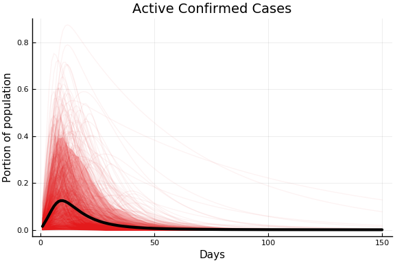
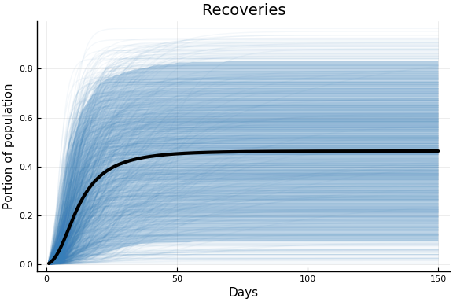

This work is licensed under a Creative Commons Attribution-ShareAlike 4.0 International License
using Pkg
#Pkg.activate(".") # If running on vse.syzygy.ca, you might need to uncomment this command
#try
using CovidSEIR
#catch
#Pkg.add(PackageSpec(url="https://github.com/schrimpf/CovidSEIR.jl"))
#using CovidSEIR
#end
using Plots
Plots.pyplot()
using DataFrames, JLD2
jmddir = normpath(joinpath(dirname(Base.find_package("CovidSEIR")),"..","docs","jmd"))
"/home/paul/.julia/dev/CovidSEIR/docs/jmd"
Introduction¶
Data¶
We will use data from Johns Hopkins University Center for Systems Science and Engineering. It is gathered from a variety of sources and updated daily. JHU CSSE uses the data for this interactive website.. For another course, I wrote some notes using this data in python here.
This data has daily cumulative counts of confirmed cases, recoveries, and deaths in each country (and provinces within some countries).
covdf = covidjhudata()
describe(covdf)
11×8 DataFrame. Omitted printing of 2 columns
│ Row │ variable │ mean │ min │ median │ max │ nuni
que │
│ │ Symbol │ Union… │ Any │ Union… │ Any │ Unio
n… │
├─────┼───────────┼───────────┼─────────────┼───────────┼────────────┼─────
────┤
│ 1 │ Date │ │ 2020-01-22 │ │ 2020-03-28 │ 67
│
│ 2 │ confirmed │ 486.367 │ 0 │ 0.0 │ 121478 │
│
│ 3 │ Province │ │ Alberta │ │ Zhejiang │ 79
│
│ 4 │ Country │ │ Afghanistan │ │ Zimbabwe │ 177
│
│ 5 │ Lat │ 22.0528 │ -41.4545 │ 23.8298 │ 71.7069 │
│
│ 6 │ Long │ 23.2675 │ -135.0 │ 20.9394 │ 178.065 │
│
│ 7 │ deaths │ 18.9005 │ 0 │ 0.0 │ 10023 │
│
│ 8 │ recovered │ 162.121 │ 0 │ 0.0 │ 62098 │
│
│ 9 │ iso2c │ │ AD │ │ ZW │ 170
│
│ 10 │ cpop │ 2.27709e8 │ 33785.0 │ 2.49924e7 │ 1.39273e9 │
│
│ 11 │ ppop │ 2.74801e7 │ 41078 │ 1.557e7 │ 111690000 │
│
Model¶
We will estimate a susceptible, exposed, infectious, recovered (SEIR) epidemiological model of Covid transmission. In particular, we will use a version based on this webapp by Allison Hill.
The model contains the following variables, all of which are functions of time
- $S$: Susceptible individuals
- $E$: Exposed individuals - infected but not yet infectious or symptomatic
- $I_i$: Undetected infected individuals in severity class $i$.
Severity increaes with $i$ and we assume individuals must pass
through all previous classes
- $I_1$: Mild infection
- $I_2$: Severe infection
- $C_i$ confirmed infected individuals in severity class $i$
- $R = R_u + R_c$: individuals who have recovered from disease and are
now immune
- $R_u$ recovered individuals whose infection were never detected
- $R_c$ recovered individuals who were confirmed cases
- $X$: Dead individuals
Compared to Hill’s model, we have reduced the number of severity classes and from 3 to 2, and we have added undetected infections and recoveries. In the data, we observe active confirmed cases $\approx \sum_i C_i$, deaths $\approx X$, and confirmed recoveries $\approx R_c$.
These variables evolve according to the following system of differential equations.
Where the parameters are :
- $\beta_i$ rate at which infected individuals in class $i$ contact susceptibles and infect them
- $a$ rate of progression from the exposed to infected class
- $\gamma_i$ rate at which infected individuals in class $i$ recover from disease and become immune
- $p_1$ rate at which infected individuals in class $i$ progress to class $i+1$
- $p_2$ death rate for individuals in the most severe stage of disease
- $\tau$ rate at which infections of class $1$ are detected
Note that we are assuming that all severe infections are detected (and hence $I_2 = 0$). We are also assuming that confirmed and unconfirmed cases have the same recovery and progression rates.
Empirical Model¶
Our data has country population, $N$, daily cumulative confirmed cases, $c_t$, deaths, $d_t$, and recoveries, $r_t$. We will assume that at a known time 0, there is an unknown portion of exposed individuals, $p_0$, so
and all other model variables are 0 at time 0. We assume that the observed data is distributed as
Model Limitations¶
An important limitation is that the model assumes all parameters are constant over time. This is almost surely incorrect. Most countries have implemented quarantine and distancing policies to attempt to reduce $\beta$. Efforts have also been made to increase $\tau$. Innovations in treatment and crowding of the medical system likely lead to variation in $\gamma$ and $p$.
Single Country Estimates¶
Priors¶
We use the follow prior distributions. The means of these are loosely based on Hill’s defaults.
using Distributions
defaultcountrypriors() = Dict(
"a" => truncated(Normal(1/5, 3), 1/14, 1.0),
"p[1]" => truncated(Normal(0.05, 0.3), 0, 1),
"p[2]" => truncated(Normal(0.05, 0.3), 0, 1),
"γ[1]" => truncated(Normal(0.133, 0.5), 0, 3),
"γ[2]" => truncated(Normal(0.05, 0.3), 0, 1),
"β[1]" => truncated(Normal(0.5, 1), 0, 10),
"β[2]" => truncated(Normal(0.5, 1), 0, 10),
"τ" => truncated(Normal(0.2, 2), 0, 10),
"pE0" => truncated(Normal(0.001, 0.1), 0, 1),
"sigD" => InverseGamma(2,3),
"sigC" => InverseGamma(2,3),
"sigRc" => InverseGamma(2,3))
Summary statistics of draws from this prior distribution are below.
pr = priorreport()
pr.tbl
Error: type NamedTuple has no field tbl
The following plots show the implications of this prior for the observed data. The faint lines on each figure shows 1000 trajectories sampled from the prior distribution. The black line is the prior mean. The shaded region is a pointwise 90% prior credible interval.
plot(pr.figs[1], xlabel="Days", ylabel="Portion of population")

plot(pr.figs[2], xlabel="Days", ylabel="Portion of population")

plot(pr.figs[3], xlabel="Days", ylabel="Portion of population")

Subjectively this prior seems reasonable. It is perhaps too concentrated on relatively fast epidemics. I may alter it, but it’s what I used for the current results.
Estimation¶
We estimate the model by MCMC. Specifically, we use the Turing.jl package (Ge, Xu, and Ghahramani 2018) . For sampling, we use the No-U-Turn-Sampler variant of Hamiltonian Monte Carlo. In the results below we use 4 chains with 1000 warmup iterations, and 1000 iterations for the results.
Canada¶
We estimate the model with the following code. It takes about an hour.
canada = CountryData(covdf, "Canada");
using Turing
canmod = countrymodel(canada)
cc = Turing.psample(canmod, NUTS(0.65), 2000, 4)
import JLD2
JLD2.@save "$jmddir/canada_$(Dates.today()).jld2" cc
JLD2.@load "$jmddir/canada_2020-03-28.jld2" cc;
Estimates¶
plot(cc)

We can see that there might be convergence issues. There are large differences between the four chains for some parameters.
describe(cc)
2-element Array{ChainDataFrame,1}
Summary Statistics
parameters mean std naive_se mcse ess r_hat
────────── ─────── ────── ──────── ────── ──────── ──────
a 0.3088 0.2412 0.0038 0.0231 89.6474 1.0359
pE0 0.0000 0.0000 0.0000 0.0000 70.5632 1.0856
p[1] 0.1042 0.1802 0.0028 0.0271 16.0643 2.4066
p[2] 0.1835 0.1769 0.0028 0.0205 21.5262 1.2919
sigC 55.9872 5.3305 0.0843 0.4254 151.1913 1.0043
sigD 1.2701 0.1226 0.0019 0.0091 156.7255 1.0465
sigRc 17.4322 1.4134 0.0223 0.0887 303.4507 1.0111
β[1] 0.5243 0.3414 0.0054 0.0402 26.0625 1.1952
β[2] 0.9836 0.6433 0.0102 0.0441 170.9821 1.0298
γ[1] 0.0504 0.1739 0.0027 0.0222 19.6993 1.3554
γ[2] 0.2633 0.2855 0.0045 0.0318 26.4008 1.2485
τ 1.4733 1.2375 0.0196 0.1117 60.5718 1.0828
Quantiles
parameters 2.5% 25.0% 50.0% 75.0% 97.5%
────────── ─────── ─────── ─────── ─────── ───────
a 0.0750 0.1199 0.2164 0.4248 0.9082
pE0 0.0000 0.0000 0.0000 0.0000 0.0000
p[1] 0.0021 0.0057 0.0098 0.1192 0.6038
p[2] 0.0024 0.0044 0.1515 0.2911 0.5979
sigC 46.3921 52.1740 55.7451 59.4129 66.9490
sigD 1.0686 1.1820 1.2583 1.3417 1.5536
sigRc 14.9106 16.3755 17.3844 18.3851 20.2662
β[1] 0.0931 0.3109 0.4274 0.6564 1.4965
β[2] 0.0789 0.5019 0.8582 1.3500 2.4933
γ[1] 0.0007 0.0042 0.0072 0.0098 0.6798
γ[2] 0.0022 0.0124 0.1721 0.4366 0.9681
τ 0.0092 0.3943 1.2458 2.2669 4.2214
The parameter estimates are generally not very precise.
Fit¶
sdf = simtrajectories(cc, canada, 1:150)
f = plotvars(sdf, canada)
f.fit

In this figure, solid lines are observed data, dashed lines are posterior means, and the shaded region is a pointwise 90% credible interval.
Note that the last day of data used in the estimation was March 27th. The fit appears quite good. The fitted estimates are also remarkably precise. Although individual parameters are not precisely estimated, the combination of them that gives rise to the observed data is precisely estimated.
Implications¶
We now look at the model’s projections for some observed and unobserved variables.
for fig in f.trajectories
display(fig)
end


In general we see a similar pattern as noted above: the posteriors for observed variables are fairly precise. However, the posteriors for unobserved variables, such as the portion of undetected infections and the portion of mild infections, are very imprecise.
Italy¶
italy = CountryData(covdf, "Italy");
itmod = countrymodel(italy)
ci = Turing.psample(itmod, NUTS(0.65), 2000, 4)
import JLD2
JLD2.@save "$jmddir/italy_$(Dates.today()).jld2" ci
JLD2.@load "$jmddir/italy_2020-03-28.jld2" ci;
Estimates¶
plot(ci)

describe(ci)
2-element Array{ChainDataFrame,1}
Summary Statistics
parameters mean std naive_se mcse ess r_hat
────────── ──────── ─────── ──────── ────── ──────── ──────
a 0.1821 0.1772 0.0028 0.0227 16.0643 1.7055
pE0 0.0000 0.0000 0.0000 0.0000 16.0643 1.9103
p[1] 0.0006 0.0005 0.0000 0.0001 17.7140 1.4648
p[2] 0.0279 0.0209 0.0003 0.0033 16.0643 7.7417
sigC 439.9273 57.7940 0.9138 6.8324 16.6947 1.4674
sigD 86.8377 24.9425 0.3944 3.8063 16.0643 3.4150
sigRc 143.3689 11.7722 0.1861 0.6651 326.4399 1.0226
β[1] 1.3916 0.7617 0.0120 0.1072 16.2578 1.5885
β[2] 1.0478 0.7186 0.0114 0.0346 364.2459 1.0204
γ[1] 0.2462 0.2050 0.0032 0.0291 16.5431 1.5453
γ[2] 0.0251 0.0288 0.0005 0.0046 16.0643 7.8777
τ 0.0001 0.0000 0.0000 0.0000 91.1094 1.0839
Quantiles
parameters 2.5% 25.0% 50.0% 75.0% 97.5%
────────── ──────── ──────── ──────── ──────── ────────
a 0.0723 0.0826 0.1013 0.1903 0.7374
pE0 0.0000 0.0000 0.0000 0.0000 0.0000
p[1] 0.0000 0.0001 0.0006 0.0010 0.0019
p[2] 0.0152 0.0155 0.0160 0.0278 0.0704
sigC 355.6332 397.2074 428.3271 473.3011 579.4653
sigD 39.8203 75.1277 96.2984 103.7001 117.2422
sigRc 122.0351 135.1442 142.6531 151.3082 167.1851
β[1] 0.3304 0.6782 1.3742 1.8807 2.9848
β[2] 0.0484 0.4801 0.9462 1.4963 2.7269
γ[1] 0.0002 0.0482 0.2242 0.3697 0.7272
γ[2] 0.0028 0.0075 0.0104 0.0267 0.0823
τ 0.0000 0.0001 0.0001 0.0001 0.0001
Compared to Canada, Italy has a very low estimate of $\tau$. Apparently a high number of undetected cases helps to explain the rapid growth in confirmed cases in Italy.
Fit¶
sdf = simtrajectories(ci, italy, 1:150)
f = plotvars(sdf, italy)
f.fit

As with Canada, the fit is very good, and the posterior distribution of observables is very precise.
Implications¶
for fig in f.trajectories
display(fig)
end


The posterior estimates imply that Italy has about 10 times as many undetected cases as detected.
Extensions¶
- Estimate single country model for more countries/areas.
- Estimate a multi-country model with some parameters common across countries and others multi-level distributions.
- Allow time varying parameters.
About this document¶
This document was created using Weave.jl. The code is available in on github.
Ge, Hong, Kai Xu, and Zoubin Ghahramani. 2018. “Turing: A Language for Flexible Probabilistic Inference.” In International Conference on Artificial Intelligence and Statistics, AISTATS 2018, 9-11 April 2018, Playa Blanca, Lanzarote, Canary Islands, Spain, 1682–90. http://proceedings.mlr.press/v84/ge18b.html.